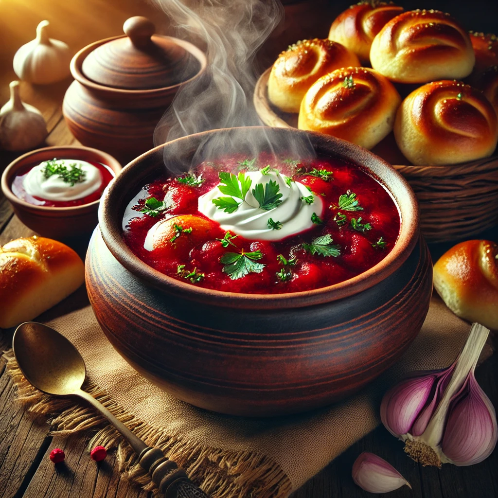

Борщ
Інгредієнти:
- Буряк - 2 шт.
- Картопля - 3 шт.
- Капуста - 200 г
- М'ясо (яловичина) - 300 г
- Цибуля - 1 шт.
- Морква - 1 шт.
- Томатна паста - 2 ст. л.
- Сіль, перець за смаком
Приготування:
- Зварити м'ясо до готовності.
- Додати нарізану картоплю та капусту.
- Підсмажити цибулю, моркву та буряк, додати томатну пасту.
- Додати засмажку до борщу, посолити та поперчити.
- Варити до готовності.